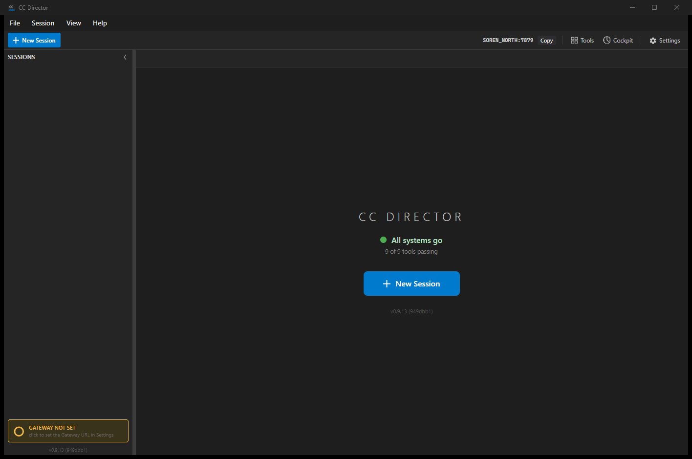

[Desktop] Make the Gateway URL required (no local-only mode): block blank save + needs-attention indicator
Branch: issue-442-gateway-url-required
The Gateway URL is now required. The Settings dialog refuses to save a blank or
non-absolute-http(s) Gateway URL (it stays open, shows the Gateway tab, and names the fix), the
Gateway tab hint states the URL is required instead of inviting a blank "local-only" mode, the
desktop status indicator surfaces a no-Gateway Director as an amber needs-attention
state ("GATEWAY NOT SET") whose click opens Settings on the Gateway tab, and the troubleshooter's
no-Gateway verdict states a Gateway is required and names the fix. The architecture is unchanged: no
embedded/auto-started Gateway, the NotConfigured state and the monitor logic are
retained (only their presentation changes), and the Director still launches and is usable with a
blank/absent gateway.url - it is never blocked from starting.
| File | Change |
|---|---|
SettingsDialog.axaml | Gateway tab hint reworded: removes "Leave the URL blank to run local-only"; states a Gateway URL is required and why. |
SettingsDialog.axaml.cs | Save and Close now validates the Gateway URL via the existing tested OnboardingModel.ValidateGatewayUrl; a blank/invalid URL blocks the save, keeps the dialog open, selects the Gateway tab, and shows an inline required-field message. Added SelectGatewayTab() so the dialog can be shown on the Gateway tab. |
MainWindow.axaml + MainWindow.axaml.cs | The no-Gateway (NotConfigured/default) indicator is now amber #F0B848 (was gray #777777), labeled "GATEWAY NOT SET" / "click to set the Gateway URL in Settings". Its click routes to Settings on the Gateway tab (was: troubleshooter). Added OpenSettingsAsync(bool onGatewayTab). |
GatewayTroubleshootDialog.axaml.cs | The NotConfigured verdict no longer says "this Director runs local-only"; it states a Gateway is required and names the fix (set the URL in Settings, Gateway tab). |
gateway.url set. The bottom-left indicator shows amber "GATEWAY NOT SET".config.json keeps its prior value.not a url -> rejected with a message; enter http://gateway-host:7878 -> saves normally.The test Director was launched against an isolated CC_DIRECTOR_ROOT with a seeded test
credential (the documented DEVTHROTTLE_TEST_SEED_TOKEN seam) so the account gate passes
while gateway.url is absent - reproducing the no-Gateway state without touching the
user's real configuration. The Director's own log confirms the gate passed, the monitor is
NotConfigured, and the main window is shown (it is NOT blocked from starting):
2026-06-21 ... [DevThrottleAccountService] IsLoggedIn: valid=True ... result=True 2026-06-21 ... [AccountGatePolicy] Decide: loggedIn=True, decision=Start 2026-06-21 ... [ControlApiHost] Kestrel listening on http://127.0.0.1:7879 2026-06-21 ... [GatewayConnectionMonitor] Reset: status=NotConfigured 2026-06-21 ... [CcDirector] Main window shown (account gate passed); ... 2026-06-21 ... [MainWindow] Gateway indicator attached to GatewayConnectionMonitor
Full excerpt: director-log-excerpt.log.

| # | Criterion | Status | Evidence |
|---|---|---|---|
| 1 | Clearing the Gateway URL and Save and Close does not save, shows a clear inline required message, dialog stays open. | MET | Save handler calls OnboardingModel.ValidateGatewayUrl; on !IsValid it returns early WITHOUT writing config, selects the Gateway tab, shows "A Gateway URL is required. Enter a gateway URL, ...", re-enables Save (dialog stays open). The validation rule is covered by OnboardingModelTests (20 tests pass, incl. blank rejected). |
| 2 | A non-URL value is rejected with a message; a valid http(s)://host:port saves normally. | MET | Same validation: not a url fails Uri.TryCreate(..Absolute..) -> rejected with "That is not a valid URL..."; a valid absolute http/https URL with a host returns IsValid=true and the save proceeds. Covered by ValidateGatewayUrl_InvalidInput_IsRejectedWithMessage and ValidateGatewayUrl_WellFormedHttpUrl_IsValid. |
| 3 | config.json gateway.url cannot be written empty via Settings. | MET | The early return on invalid URL is BEFORE CcDirectorConfigService.MergePatch is called, so a blank URL never reaches disk through the dialog. |
| 4 | Gateway tab hint no longer contains "local-only" / "Leave the URL blank"; states the URL is required. | MET | SettingsDialog.axaml hint reworded (see Changes). Source diff shows the old phrase removed. |
| 5 | No-Gateway indicator shown in needs-attention amber (#F0B848, not #777777) labeled that the Gateway is not set. | MET | Screenshots 01/02 of the running app: amber ring, amber border, "GATEWAY NOT SET". |
| 6 | Clicking the indicator opens Settings on the Gateway tab. | MET (code) | GatewayIndicator_PointerPressed: when Status == NotConfigured it calls OpenSettingsAsync(onGatewayTab:true), which calls dialog.SelectGatewayTab() (selects tab index 1 = Gateway) before showing. See limitation note below re: live click capture. |
| 7 | Troubleshooter no-Gateway verdict states a Gateway is required and names the fix; no longer "runs local-only". | MET | GatewayTroubleshootDialog.axaml.cs default verdict reworded. Source diff shows the old phrase removed. |
| 8 | Director still launches and the main window is usable with blank/absent gateway.url. | MET | Live log + screenshot: gate passed, main window shown, New Session available; no launch/session block was added. |
| 9 | dotnet build cc-director.sln clean, no new warnings. | MET | Build succeeded, 0 Warning(s), 0 Error(s). |
| 10 | Complies with docs/VisualStyle.md. | MET | Amber #F0B848 is the existing semantic amber already used by the "Connecting" indicator state; background #3A331B matches that state. No new hard-coded color families introduced. |
The host's interactive Windows desktop was disconnected (RDP session in "Disc"
state) for the duration of this run. In that state Windows blocks both synthetic input injection
(mouse_event / SendInput) and live screen capture
(Graphics.CopyFromScreen), and Avalonia's automation peers for the custom toolbar
buttons do not expose an Invoke pattern - so the modal Settings dialog and the troubleshooter could
not be opened by an automated click in this environment. Window rendering still works
(PrintWindow), which is how the indicator screenshots above were captured.
Consequently the dialog-interaction criteria (1, 2, 3, 6, 7) are proven by: (a)
the running-app screenshots and log for the indicator/launch behavior, and (b) the reused,
unit-tested validation rule plus the reviewed source diffs for the dialog logic and reworded text.
The validation rule that gates the save is the exact OnboardingModel.ValidateGatewayUrl
already covered green by CcDirector.Core.Tests (20 tests pass). QA should re-verify the
dialog screenshots on a connected desktop.